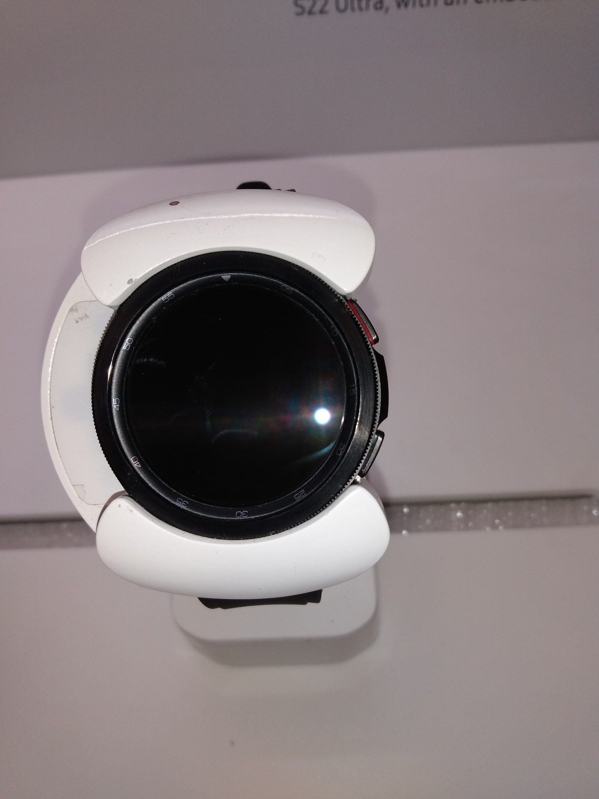

The Autopsy Report · Device #058
Samsung Galaxy Watch 4
Samsung's first Wear OS watch in years hides an Exynos W920, a dedicated biosensing chip, and — refreshingly — a teardown that tells us what's actually in there.
What is this thing?
The Samsung Galaxy Watch 4 is Samsung's 2021 smartwatch — the first Galaxy Watch to run Wear OS (Google's platform) instead of Samsung's own Tizen. The Wi-Fi model is SM-R880 (FCC ID A3LSMR880). It packs an Exynos W920 chip, 16 GB of storage, and a dedicated optical biosensor for heart-rate and SpO2 readings. iFixit teardown · Wareable
Not yet on our bench
Straightforward honesty first: BareBoard has not possessed, disassembled, tested, booted, or touched the firmware of this unit. We don't have one on the bench yet. Everything below is built from public records — FCC filings, manufacturer material, datasheets, manuals, and published teardowns — with every claim linked to its source and graded for confidence. When a fact genuinely requires our hands on hardware (boot logs, our own photos, exact board revision of a future unit), we say so out loud.
That framing is what makes publishing now legitimate: this is a public-records autopsy, and it will grow into a bench autopsy the day a unit lands on our desk.
A short history
- June 2021The Galaxy Watch 4 gains FCC certification ahead of launch — Wi-Fi and LTE models both. SamMobile · AndroidHeadlines · GSMArena
- August 2021Samsung launches the Watch 4 on Wear OS. Wareable
- September 2021iFixit's teardown: the Exynos W920 package (with what appears to be 1.5 GB of LPDDR4 stacked on it), a TI AFE4500-family biosensor, and no external service hatch — unlike the Watch 3. iFixit teardown · AndroidCommunity
The outside
Round AMOLED display in an aluminum case, rotating-touch bezel (the Classic keeps the physical one), and a sensor array on the back. Unlike the Galaxy Watch 3, there's no external service hatch — the back is sealed. iFixit teardown

The board
iFixit's teardown finds a dense single board: a Samsung package combining the Exynos W920 with what appears to be 1.5 GB of LPDDR4 stacked on top (iFixit's wording — they flag the identification as uncertain), a TI AFE4500S/AFE4500-family optical biosensing chip, a Broadcom BCM43013 for Wi-Fi/Bluetooth, a Shannon 915 IF IC, and a Qualcomm Atheros QPA5580 that iFixit also flags as uncertain. Storage is 16 GB at the product level. iFixit teardown
Under the microscope: the chips
What's inside, what each part does, and how sure we are. Confirmed means a primary source. Likely means well-corroborated public records. We keep iFixit's own uncertainty flags — where they hedge, we hedge.
| Chip | What it does | How we know | Dig deeper |
|---|---|---|---|
| Samsung Exynos W920 with apparently 1.5 GB LPDDR4 stacked on-package |
The main application processor — runs Wear OS. | Likely Identified in the iFixit teardown; the stacked-RAM identification is iFixit's own uncertain reading, kept as-is. iFixit teardown | No public datasheet was found — Samsung does not publish datasheets for the W920. |
| TI AFE4500S AFE4500 family |
Optical biosensing: heart-rate and SpO2 measurement. | Likely Identified in the iFixit teardown. iFixit teardown | AFE4500 datasheet (mirror) |
| Broadcom BCM43013 | Wi-Fi and Bluetooth connectivity. | Likely Identified in the iFixit teardown. iFixit teardown | No public datasheet located for this marking. |
| Shannon 915 IF IC |
Intermediate-frequency processing for the cellular radio path. | Likely Identified in the iFixit teardown. iFixit teardown | No public datasheet located for this marking. |
| Qualcomm Atheros QPA5580 (uncertain) | RF front-end role per the teardown's reading. | Likely iFixit flags this identification as uncertain — we keep the flag. iFixit teardown | No public datasheet located for this marking. |
The government's file on this device
Samsung's FCC filing for A3LSMR880 (the Wi-Fi SM-R880) was certified in June 2021 ahead of launch, alongside the LTE variants. Our research slice notes the filing carries only test-setup photos — no public internal-photo exhibit — and the filing page itself was unreachable in this pass, so the board story above rests on the iFixit teardown. SamMobile · ReadWrite
Debug & service modes
Our posture: we listen, we don't knock. Only publicly verified interfaces — read-only, nothing that defeats locks.
User-facing service only. Unpairing and factory reset run through the watch's own settings and the paired phone's companion app — ordinary, documented, user-level operations. We document nothing beyond that: no bootloader-unlock or flashing instructions belong here.
No public serial console or JTAG header is documented for this watch in the sources we checked, and the sealed back means there's no service hatch to open anyway. iFixit teardown
What the public record says
The Wear OS pivot, in silicon. The Watch 4's board tells the platform story: a Samsung application processor, a TI biosensor doing the health work, and Broadcom handling the radios. iFixit teardown · Wareable
Sealed tighter than its predecessor. iFixit notes the missing service hatch — a small regression in repairability versus the Watch 3. AndroidCommunity
What we didn't do
- We have not possessed, disassembled, tested, or booted this device.
- We have not extracted, modified, shared, or reverse-engineered its firmware.
- We document only publicly verified interfaces and user-facing modes — read-only, no lock bypass, no authentication defeat, no credential or key material.
- Anything below marked as unknown stays unknown until the bench says otherwise.
By the numbers
- Model: SM-R880 Wi-Fi (FCC ID A3LSMR880)
- Chips: Exynos W920 (+ apparent 1.5 GB LPDDR4) · TI AFE4500S · Broadcom BCM43013 · Shannon 915 · QPA5580 (uncertain)
- Storage: 16 GB (product level)
- OS: Wear OS (first Galaxy Watch on it)
- FCC: certified June 2021 · launched August 2021
Words to know
Every term this page uses, in plain English. No prior knowledge required.
- Wear OS
- Google's smartwatch operating system — what the Watch 4 runs instead of Samsung's Tizen.
- Exynos W920
- Samsung's chip for wearables: the watch's main processor.
- Biosensor
- A chip plus optics that measures body signals — heart rate, blood oxygen — from the wrist.
- LPDDR4
- Low-power RAM — the working memory stacked on top of the main chip.
- FCC ID
- The ID the FCC assigns to each approved wireless product. Punch it into fccid.io and the whole public filing comes up.
Sources & confidence
- FCC certification June 2021 (A3LSMR880, SM-R880 Wi-Fi): SamMobile, AndroidHeadlines, GSMArena, ReadWrite — Likely. The filing page itself was unreachable in this pass.
- Exynos W920, stacked LPDDR4, AFE4500S, BCM43013, Shannon 915, QPA5580 (uncertain), no service hatch: iFixit teardown via iFixit/AndroidCommunity — Likely, with iFixit's own uncertainty flags preserved.
- 16 GB storage, Wear OS, August 2021 launch: product coverage — Likely.
- AFE4500 datasheet: mirrored PDF — family reference, graded accordingly.
- Anything not listed here is unknown until the bench says otherwise. We'll say so, out loud, when that's the case.
Serial numbers and QR codes are blacked out of every published photo. Raw originals stay private.
Legal note. BareBoard is an educational project. Everything on this page comes from public records — FCC filings, manufacturer material, datasheets, and published teardowns — plus our own analysis of those records. We don't publish, host, or distribute firmware, keys, passwords, or credentials. Product names and trademarks belong to their respective owners and appear here only to identify the hardware. If you believe anything here infringes your rights, contact us and we'll address it promptly.